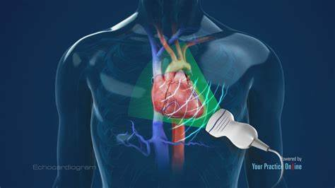
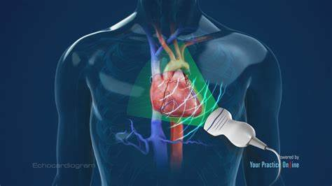

POTS is renowned for inducing dizziness upon standing, with some individuals experiencing actual fainting spells when attempting to rise, hence earning POTS the nickname "the fainting disease".
Roughly 65% of women diagnosed with POTS fall into the high-risk category for suicide and 18% claim they have already made an attempt. As someone who suffers from POTS on a daily basis, I can attest that the lack of research on POTS is infuriating and discouraging. In July 2020, I received the Pfizer COVID-19 vaccine. Shortly after, I faced a myriad of symptoms including extreme weakness and fatigue, tachycardia, chronic headaches, and passing out multiple times a day. After suffering from symptoms for over a year and six months of brutal testing, I was diagnosed with POTS, Ehlers-Danlos Syndrome, Chronic Fatigue Syndrome (CFS), Hypothyroidism, and Hashimoto's thyroiditis in January 2022. Since then, my life has completely flipped upside down. I had to quit volleyball, the sport I dedicated years of my life to, I could not attend school because my symptoms were so difficult to manage, and I struggled with mental health challenges, something I had never dealt with before. It is my hope that after reading this website, the reader gets a firm grasp on POTS and how many lives it affects each and every day.
Facts
Postural Orthostatic Tachycardia Syndrome (POTS) is a disorder of the autonomic nervous system.
It is a chronic and frequently severely debilitating condition that typically affects females, primarily adolescents going through puberty.
Since the symptoms can be very easily confused with extreme exhaustion, the number of lives affected by POTS is unknown.
It is estimated that POTS affects roughly 1 to 3 million Americans alone and at least 1 million more after COVID-19.
There are multiple types of POTS and depending on the person, the symptoms could vary.
The 4 types of POTS are:
Neuropathic POTS- Neuropathic POTS deals with damage to the small fiber nerves that regulate blood constriction in the limbs and stomach.
Hyperadrenergic POTS- Hyperadrenergic POTS is associated with elevated levels of norepinephrine, a stress hormone.
Hypovolemic POTS- Hypovolemic POTS describes POTS with alarmingly low levels of blood (hypovolemia).
Secondary POTS- Secondary POTS involves another condition that typically causes autonomic neuropathy. These other conditions include Lyme disease, lupus, or Sjögren's syndrome.
To be diagnosed you have to go through extensive testing. Some tests include:
 
